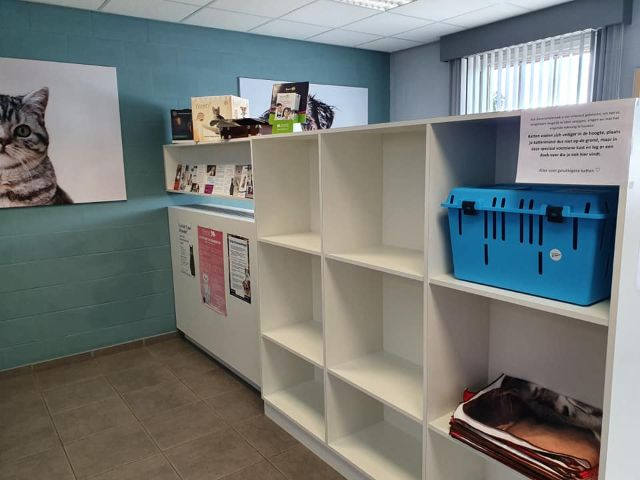
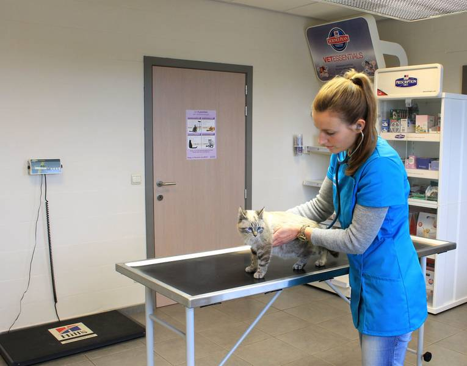
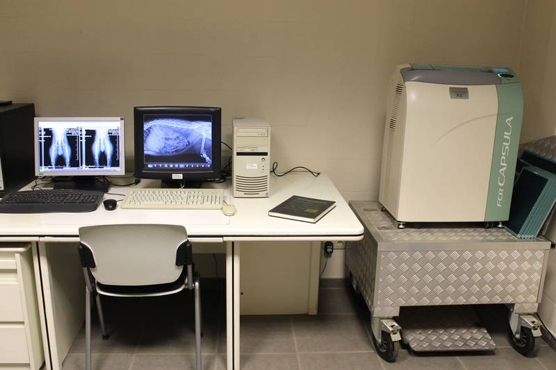
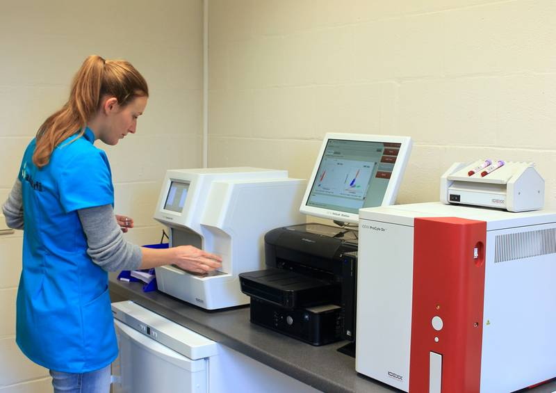
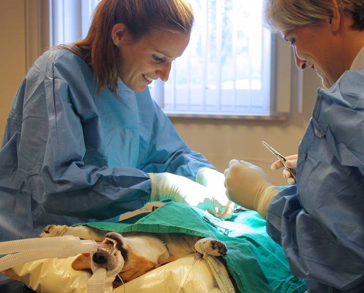
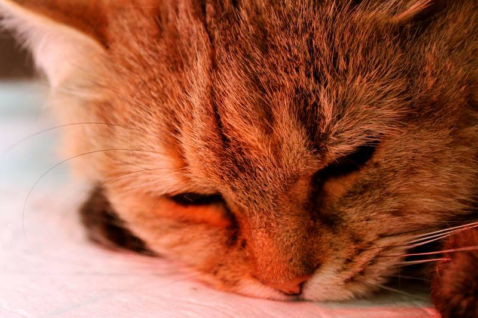

01
Onthaal
Aan de balie helpt onze assistente Melanie u graag met vragen, afspraken en producten voor uw dier. U bent welkom op weekdagen van 9u15 tot 12u30 en van 13u30 tot 19u (behalve woensdagvoormiddag).

Kleine huisdieren · Nevele
Onderzoek, behandeling en herstel onder één dak.
Onze praktijk
Aan de balie helpt onze assistente Melanie u graag met vragen, afspraken en producten voor uw dier. U bent welkom op weekdagen van 9u15 tot 12u30 en van 13u30 tot 19u (behalve woensdagvoormiddag).

In onze ruime wachtzaal wacht u uw beurt af. Voor meer rust zijn honden en katten van elkaar gescheiden, met hogere ‘parkeerplaatsen’ waar katten zich veiliger voelen.

In drie consultatieruimtes doen we een grondig onderzoek, van gewicht en hart tot tanden, ogen, oren en vacht. Een jaarlijkse check-up is aan te raden; bij vaccinatie krijgt u automatisch een herinnering. Indien nodig volgt een bloedname, RX of echografie.

Met digitale radiografie sporen we fracturen op, bekijken we borst- en buikholte of tellen we pups en kittens. Echografie gebruiken we onder meer voor drachtdiagnose, baarmoederontsteking, blaasproblemen of tumoren.

In ons eigen labo doen we hematologisch en biochemisch bloedonderzoek, vaak met resultaat binnen het kwartier — belangrijk bij spoedgevallen. Ook een preventieve controle bij oudere dieren is aan te raden.

In onze operatiezaal met gasanesthesie plannen we elke weekdag ingrepen in, zoals castratie, sterilisatie, keizersnede, tumoren, wondzorg, blaasstenen, vreemde voorwerpen en tandheelkunde.

Na een operatie of bij langere zorg verblijven dieren in een aparte hospitalisatieruimte, met eigen bench, aangepaste voeding en indien nodig warmte of een baxter. Honden worden uitgelaten; katten krijgen een eigen kattenbak.
Een afspraak maken
Biebuyckstraat 62, 9850 Deinze (Nevele)